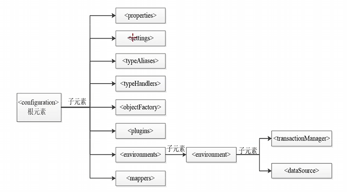

MyBatis核心配置文件
MyBatis 核心配置文件中的主要元素

。需要注意的是，在核心配置文件中，<configuration> 的子元素必须按照上图由上到下的顺序进行配置，否则MyBatis在解析XML配置文件的时候会报错。
重点学习：<properties> (引入外部properties)、<settings> (改变MyBatis的默认行为)、<typeAliases> (别名映射)、<environments> (数据元环境配置)、<mappers> (配置映射文件)标签
<properties> 元素
<properties>用来加载外部的properties文件
具体语法如下：
jdbc.driver=com.mysql.cj.jdbc.Driver
jdbc.url=jdbc:mysql://localhost:3306/mybatis
jdbc.username=root
jdbc.password=root
<properties resource="db.properties" /> <!-- (1)! -->
<dataSource type="POOLED">
<!-- 数据库驱动 -->
<property name="driver" value="${jdbc.driver}" />
<!-- 连接数据库的url -->
<property name="url" value="${jdbc.url}" />
<!-- 连接数据库的用户名 -->
<property name="username" value="${jdbc.username}" />
<!-- 连接数据库的密码 -->
<property name="password" value="${jdbc.password}" />
</dataSource>
resource用于从类路径加载配置文件db.properties，是最常用的方式。url是绝对路径，灵活性差，不常在项目中使用。
完成上述配置后，<dataSource> 元素中连接数据库的 4 个属性（driver、url、username 和 password）值将会由db.properties 文件中对应的值来动态替换。这样一来，<properties> 元素就可以通过 db.properties 文件实现动态参数配置。
<settings> 元素
企业开发对于数据库的列名的命名规范：多个单词间下划线隔开，而 Java 代码的命名规范为驼峰命名。
如果在实际项目中这样命名，运行测试时是不会通过的，因为实体属性名和列名不一致，MyBatis 不能自动映射。因此需要用 <settings> 标签来解决这个问题，以及一些其他设置。
| 配置参数 | 描述 |
|---|---|
| cacheEnabled | 是否开启缓存 |
| lazyLoadingEnabled | 延迟加载的全局开关 |
| mapUnderscoreToCamelCase | 是否开启自动驼峰命名规则（camel case）映射 |
| ... | 其他用到再加 |
<settings>
<!-- 是否开启缓存 -->
<setting name="cacheEnabled" value="true" />
<!-- 是否开启延迟加载,如果开启,所有关联对象都会延迟加载 -->
<setting name="lazyLoadingEnabled" value="true" />
<!-- 是否开启关联对象属性的延迟加载,如果开启,对任意延迟属性的调用都
会使用带有延迟加载属性的对象向完整加载,否则每种属性都按需加载 -->
<setting name="aggressiveLazyLoading" value="true" />
...
</settings>
<TypeAliases> 元素
核心配置文件若要引用一个POJO实体类，要用包.类名的形式:
<select id="findById" parameterType="int" resultType="com.itheima.pojo.User">
select * from users where uid = #{id}
</select>
这样太长容易打错，而且麻烦，可以用 <TypeAliases> 元素进行别名映射
多个全限定类设置别名的方式
方式一：在 <typeAliases> 元素下，使用多个 <typeAlias> 元素为每一个全限定类逐个配置别名。
<typeAliases>
<typeAlias alias="User" type="com.itheima.pojo.User"/>
<typeAlias alias="Student" type="com.itheima.pojo.Student"/>
<typeAlias alias="Employee" type="com.itheima.pojo.Employee"/>
<typeAlias alias="Animal" type="com.itheima.pojo.Animal"/>
</typeAliases>
实体特别多不可能一条条手写，因此，可以用包扫描，默认实体类名就是别名。
方式二：通过自动扫描包的形式自定义别名。
除了可以使用 <typeAliases> 元素为实体类自定义别名外，MyBatis 框架还为许多常见的 Java 类型（如数值、字符串、日期和集合等）提供了相应的默认别名。例如别名 _byte 映射类型 byte、_long 映射类型 long 等，别名可以在 MyBatis 中直接使用，但由于别名不区分大小写，所以在使用时要注意重复定义的覆盖问题。
<environment> 元素
MyBatis可以配置多套运行环境，如开发环境、测试环境、生产环境等，我们可以灵活选择不同的配置，从而将SQL映射到不同运行环境的数据库中。不同的运行环境可以通过 <environments> 元素来配置，但不管增加几套运行环境，都必须要明确选择出当前要用的唯一的一个运行环境。
MyBatis的运行环境信息包括事务管理器和数据源。在MyBatis的核心配置文件中，MyBatis通过<environments> 元素定义一个运行环境。<environment> 元素有两个子元素，<transactionManager>元素和 <daraSource> 元素。<transactionManager> 元素用于配置运行环境的事务管理器；<daraSource> 元素用于配置运行环境的数据源信息。
<environments default="development">
<!-- development 为当前数据库配置环境的唯一标识 -->
<environment id="development">
<transactionManager type="JDBC" /><!—设置使用JDBC事务管理 -->
<dataSource type="POOLED"> <!-配置数据源 -->
<property name="driver" value="${jdbc.driver}" />
<property name="url" value="${jdbc.url}" />
<property name="username" value="${jdbc.username}" />
<property name="password" value="${jdbc.password}" />
</dataSource>
</environment> ...
</environments>
<transcationManager> 元素可以配置两种类型的事务管理器，分别是JDBC和MANAGED。
-
JDBC：此配置直接使用JDBC的提交和回滚设置，它依赖于从数据源得到的连接来管理事务的作用域。
-
MANAGED：此配置不提交或回滚一个连接，而是让容器来管理事务的整个生命周期。默认情况下，它会关闭连接，但可以将
<transcationManager>元素的closeConnection属性设置为false来阻止它默认的关闭行为。
项目中使用Spring+MyBatis，则没必要在MyBatis中配置事务管理器，实际开发中，项目会使用Spring自带的管理器来实现事务管理。对于数据源的配置，MyBatis提供了UNPOOLED、POOLED和JNDI三种数据源类型。
UNPOOLED表示数据源为无连接池类型。配置此数据源类型后，程序在每次被请求时会打开和关闭数据库连接。UNPOOLED适用于对性能要求不高的简单应用程。UNPOOLED类型的数据源需要配置5种属性。
| 属性 | 说明 |
|---|---|
| driver | JDBC驱动的Java类的完全限定名 |
| url | 数据库的URL地址 |
| username | 登录数据库的用户名 |
| password | 登录数据库的密码 |
| defaultTransactionIsolationLevel | 默认的连接事务隔离级别 |
POOLED表示数据源为连接池类型。POOLED数据源利用“池”的概念将JDBC连接对象组织起来，节省了在创建新的连接对象时需要初始化和认证的时间。POOLED数据源使得并发Web应用可以快速的响应请求，是当前比较流行的数据源配置类型。
- 如果有需要，再在这里加，现在这ppt里的东西完全看不懂
<mappers> 元素
<mappers> 元素用于引入MyBatis映射文件。映射文件包含了POJO对象和数据表之间的映射信息，通过<mappers> 元素引入映射文件的方法有4种。
注意
使用类路径引入和本地路径引入，上下级之间是斜杠(/)而不是点(.)